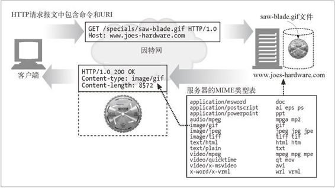

5.8 第五步——构建响应
一旦 Web 服务器识别出了资源，就执行请求方法中描述的动作，并返回响应报文。响应报文中包含有响应状态码、响应首部，如果生成了响应主体的话，还包括响应主体。3.4 节详细介绍了 HTTP 响应代码。
5.8.1 响应实体
如果事务处理产生了响应主体，就将内容放在响应报文中回送过去。如果有响应主体的话，响应报文中通常包括：
描述了响应主体 MIME 类型的 Content-Type 首部；
描述了响应主体长度的 Content-Length 首部；
实际报文的主体内容。
5.8.2 MIME类型
Web 服务器要负责确定响应主体的 MIME 类型。有很多配置服务器的方法可以将 MIME 类型与资源关联起来。
MIME 类型（mime.types）
Web 服务器可以用文件的扩展名来说明 MIME 类型。Web 服务器会为每个资源扫描一个包含了所有扩展名的 MIME 类型的文件，以确定其 MIME 类型。这种基于扩展名的类型相关是最常见的，参见图 5-12。

图 5-12 Web 服务器用 MIME 类型文件来设置资源输出的 Content-type 首部
魔法分类（Magic typing）
Apache Web 服务器可以扫描每个资源的内容，并将其与一个已知模式表（被称为魔法文件）进行匹配，以决定每个文件的 MIME 类型。这样做可能比较慢，但很方便，尤其是文件没有标准扩展名的时候。
显式分类（Explicit typing）
可以对 Web 服务器进行配置，使其不考虑文件的扩展名或内容，强制特定文件或目录内容拥有某个 MIME 类型。
类型协商
有些 Web 服务器经过配置，可以以多种文档格式来存储资源。在这种情况下，可以配置 Web 服务器，使其可以通过与用户的协商来决定使用哪种格式（及相关的 MIME 类型）“最好”。这个问题将在第 17 章讨论。
还可以通过配置 Web 服务器，将特定的文件与 MIME 类型相关联。
5.8.3 重定向
Web 服务器有时会返回重定向响应而不是成功的报文。 Web 服务器可以将浏览器重定向到其他地方来执行请求。重定向响应由返回码 3XX 说明。Location 响应首部包含了内容的新地址或优选地址的 URI。重定向可用于下列情况。
永久搬离的资源
资源可能已经被移动到了新的位置，或者被重新命名，有了一个新的 URL。Web 服务器可以告诉客户端资源已经被重命名了，这样客户端就可以在从新地址获取资源之前，更新书签之类的信息了。状态码 301 Moved Permanently 就用于此类重定向。
临时搬离的资源
如果资源被临时移走或重命名了，服务器可能希望将客户端重定向到新的位置上去。但由于重命名是临时的，所以服务器希望客户端将来还可以回头去使用老的 URL，不要对书签进行更新。状态码 303 See Other 以及状态码 307 Temporary Redirect 就用于此类重定向。
URL 增强
服务器通常用重定向来重写 URL，往往用于嵌入上下文。当请求到达时，服务器会生成一个新的包含了嵌入式状态信息的 URL，并将用户重定向到这个新的 URL 上去。1 客户端会跟随这个重定向信息，重新发起请求，但这次的请求会包含完整的、经过状态增强的 URL。这是在事务间维护状态的一种有效方式。状态码 303 See Other 和 307 Temporary Redirect 用于此类重定向。
1有时会将这些经过扩展和状态增强的 URL 称为“胖 URL”。
负载均衡
如果一个超载的服务器收到一条请求，服务器可以将客户端重定向到一个负载不太重的服务器上去。状态码 303 See Other 和 307 Temporary Redirect 可用于此类重定向。
服务器关联
Web 服务器上可能会有某些用户的本地信息；服务器可以将客户端重定向到包含了那个客户端信息的服务器上去。状态码 303 See Other 和 307 Temporary Redirect 可用于此类重定向。
规范目录名称
客户端请求的 URI 是一个不带尾部斜线的目录名时，大多数 Web 服务器都会将客户端重定向到一个加了斜线的 URI 上，这样相对链接就可以正常工作了。